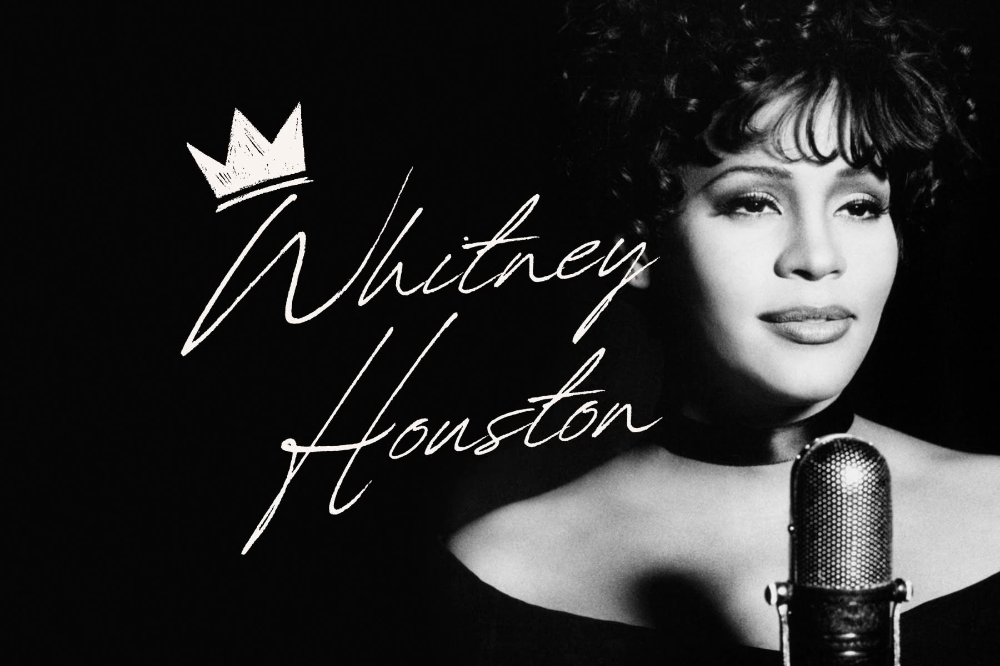
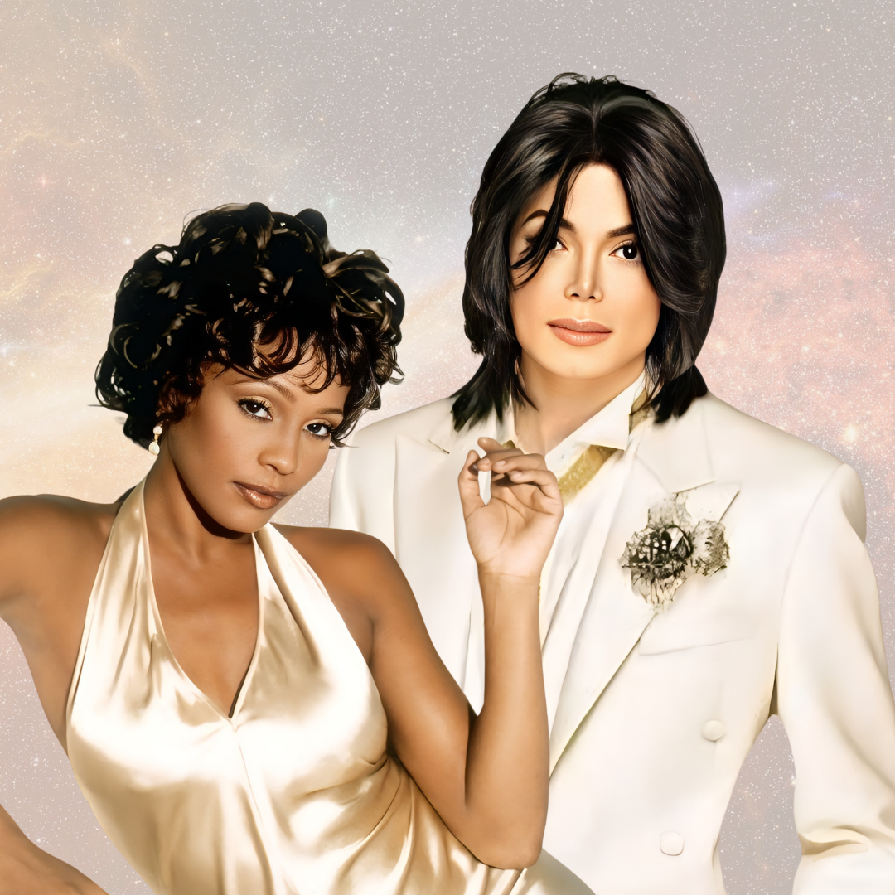
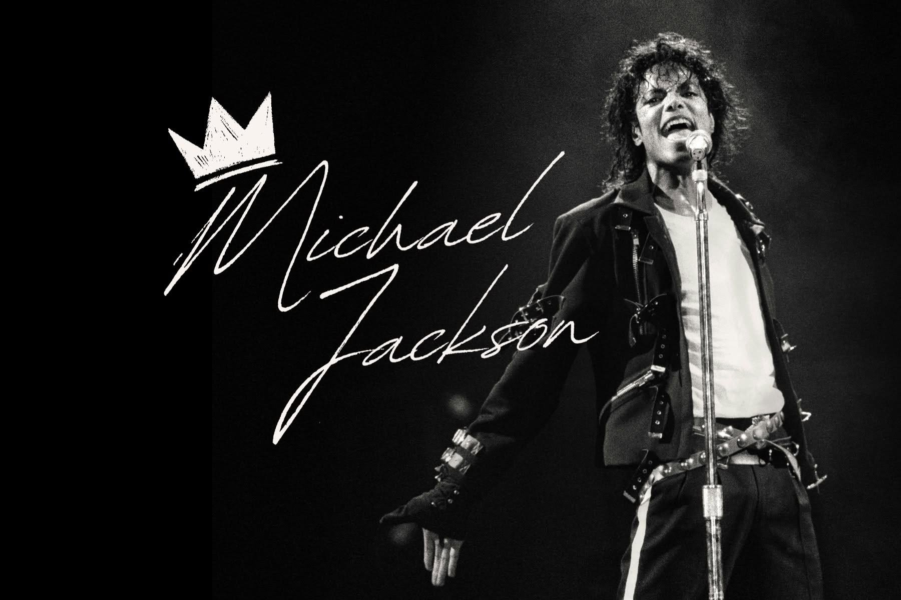

01 / THE VOICEWHITNEY
WHITNEY
HOUSTON
A voice remembered for its power, warmth, emotion, and ability to make a moment feel personal.
Some artists become more than names on a screen. Their voices, movement, presence, and stories become part of the memories people carry. This space is dedicated to Whitney Houston and Michael Jackson.

Whitney Houston and Michael Jackson created in different ways, but both left behind something that cannot be measured only by records or performances: a feeling. Their work became memory, inspiration, and a language of its own.

A voice remembered for its power, warmth, emotion, and ability to make a moment feel personal.

An artist remembered for turning music, movement, imagination, and performance into a world of his own.
Some stars shine in the sky.
Some stay in the heart.
Great artists may leave the stage, but the meaning people find in their work can continue to live.